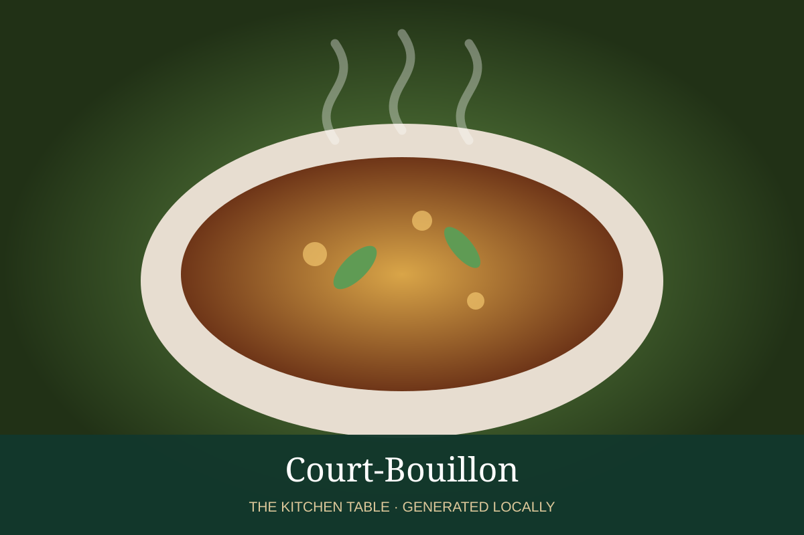

← Back to all recipes
BROTH & STOCK · FRENCH
Court-Bouillon
Acidulated aromatic poaching broth for fish and shellfish.
Broth & StockFrench

Ingredients
- 2 qt water
- 1 cup dry white wine
- 1 onion, sliced
- 1 carrot, sliced
- 1 celery rib
- 1 lemon, sliced
- 1 bay leaf
- Parsley stems
- Peppercorns
Preparation
- Combine all ingredients.
- Simmer 20–30 minutes to extract aromatics.
- Strain if a clean poaching liquid is desired.
- Use for gently poaching fish or shellfish.